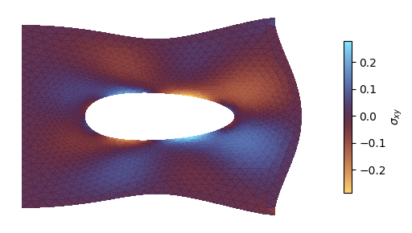

Matrix-Free approach with PETSc¤
In this notebook, we solve a linear elastic problem using PETSc based solvers. In this example, we will use the Jacobian-Vector product to compute the action of sitffness matrix instead of materializing the stiffness matrix.
In this example, we will use the Python-Aware PETSc types.
from typing import NamedTuple
import gmsh
import jax
jax.config.update("jax_enable_x64", True)
import jax.numpy as jnp
from jax import Array
from jax_autovmap import autovmap
from tatva import Mesh, Operator
from petsc4py import PETSc
Code for generating a plate with a hole and plotting the mesh
import matplotlib.pyplot as plt
from matplotlib.axes import Axes
import meshio
import numpy as np
import os
def plot_mesh(mesh: Mesh, ax: Axes | None = None) -> None:
if ax is None:
fig, ax = plt.subplots()
ax.tripcolor(
mesh.coords[:, 0],
mesh.coords[:, 1],
mesh.elements,
facecolors=np.ones(len(mesh.elements)),
cmap="managua",
edgecolors="k",
linewidth=0.2,
)
ax.set_aspect("equal")
ax.margins(0.0)
def generate_refined_plate_with_hole(
width: float,
height: float,
hole_radius: float,
mesh_size_fine: float,
mesh_size_coarse: float,
):
mesh_dir = os.path.join(os.getcwd(), "../meshes")
os.makedirs(mesh_dir, exist_ok=True)
output_filename = os.path.join(mesh_dir, "plate_hole_refined.msh")
gmsh.initialize()
gmsh.model.add("plate_with_hole_refined")
occ = gmsh.model.occ
rect = occ.addRectangle(0, 0, 0, width, height)
cx = width / 2.0
cy = height / 2.0
disk = occ.addDisk(cx, cy, 0, hole_radius, hole_radius)
out, _ = occ.cut([(2, rect)], [(2, disk)])
occ.synchronize()
surface_tag = out[0][1]
gmsh.model.addPhysicalGroup(2, [surface_tag], 1, name="domain")
boundaries = gmsh.model.getBoundary(out, oriented=False)
boundary_tags = [b[1] for b in boundaries]
gmsh.model.addPhysicalGroup(1, boundary_tags, 2, name="boundaries")
hole_curve_tags = []
for tag in boundary_tags:
xmin, ymin, zmin, xmax, ymax, zmax = gmsh.model.getBoundingBox(1, tag)
# The hole is completely inside the outer rectangle
if xmin > 0 and xmax < width and ymin > 0 and ymax < height:
hole_curve_tags.append(tag)
gmsh.model.mesh.field.add("Distance", 1)
gmsh.model.mesh.field.setNumbers(1, "CurvesList", hole_curve_tags)
gmsh.model.mesh.field.setNumber(1, "NumPointsPerCurve", 100)
gmsh.model.mesh.field.add("Threshold", 2)
gmsh.model.mesh.field.setNumber(2, "InField", 1)
gmsh.model.mesh.field.setNumber(2, "SizeMin", mesh_size_fine)
gmsh.model.mesh.field.setNumber(2, "SizeMax", mesh_size_coarse)
# Start growing the mesh exactly at the hole boundary
gmsh.model.mesh.field.setNumber(2, "DistMin", 0.0)
# Reach maximum element size at a distance equal to 2 hole radii away
gmsh.model.mesh.field.setNumber(2, "DistMax", hole_radius * 2.0)
gmsh.model.mesh.field.setAsBackgroundMesh(2)
gmsh.option.setNumber("Mesh.MeshSizeExtendFromBoundary", 0)
gmsh.option.setNumber("Mesh.MeshSizeFromPoints", 0)
gmsh.option.setNumber("Mesh.MeshSizeFromCurvature", 0)
gmsh.model.mesh.generate(2)
gmsh.write(output_filename)
gmsh.finalize()
_mesh = meshio.read(output_filename)
coords = _mesh.points[:, :2]
elements = _mesh.cells_dict["triangle"]
return Mesh(coords=coords, elements=elements)
lx = 1.0
ly = 1.0
mesh = generate_refined_plate_with_hole(
lx, ly, hole_radius=0.2, mesh_size_fine=0.01, mesh_size_coarse=0.05
)
n_dofs_per_node = 2
n_dofs = mesh.coords.shape[0] * n_dofs_per_node
plot_mesh(mesh)
Info : Meshing 1D...
Info : [ 0%] Meshing curve 5 (Ellipse)
Info : [ 30%] Meshing curve 6 (Line)
Info : [ 50%] Meshing curve 7 (Line)
Info : [ 70%] Meshing curve 8 (Line)
Info : [ 90%] Meshing curve 9 (Line)
Info : Done meshing 1D (Wall 0.0317488s, CPU 0.028828s)
Info : Meshing 2D...
Info : Meshing surface 1 (Plane, Frontal-Delaunay)
Info : Done meshing 2D (Wall 0.0757454s, CPU 0.075845s)
Info : 1874 nodes 3753 elements
Info : Writing '/home/mohit/Documents/research_notes/tatva-examples/examples/../meshes/plate_hole_refined.msh'...
Info : Done writing '/home/mohit/Documents/research_notes/tatva-examples/examples/../meshes/plate_hole_refined.msh'

Problem setup¤
from tatva.element import Tri3
op = Operator(mesh, Tri3())
boundary_left = jnp.where(jnp.isclose(mesh.coords[:, 0], 0.0))[0]
boundary_right = jnp.where(jnp.isclose(mesh.coords[:, 0], lx))[0]
point_at_y_0 = jnp.where(
jnp.isclose(mesh.coords[:, 0], lx) & jnp.isclose(mesh.coords[:, 1], 0.0)
)[0][0]
assert point_at_y_0
fixed_dofs = jnp.concatenate(
[
boundary_left * n_dofs_per_node,
]
)
free_dofs = jnp.setdiff1d(jnp.arange(n_dofs), fixed_dofs)
Defining energy functional¤
We now define the functions to compute the total strain energy
class Material(NamedTuple):
"""Material properties for the elasticity operator."""
mu: float
lmbda: float
@classmethod
def from_youngs_poisson_2d(
cls, E: float, nu: float, plane_stress: bool = False
) -> "Material":
mu = E / 2 / (1 + nu)
if plane_stress:
lmbda = 2 * nu * mu / (1 - nu)
else:
lmbda = E * nu / (1 - 2 * nu) / (1 + nu)
return cls(mu=mu, lmbda=lmbda)
mat = Material.from_youngs_poisson_2d(1, 0.3)
@autovmap(grad_u=2)
def compute_strain(grad_u):
return 0.5 * (grad_u + grad_u.T)
@autovmap(eps=2, mu=0, lmbda=0)
def compute_stress(eps, mu, lmbda):
return 2 * mu * eps + lmbda * jnp.trace(eps) * jnp.eye(2)
@autovmap(grad_u=2, mu=0, lmbda=0)
def strain_energy_density(grad_u, mu, lmbda):
eps = compute_strain(grad_u)
sigma = compute_stress(eps, mu, lmbda)
return 0.5 * jnp.einsum("ij,ij->", sigma, eps)
Enforcing boundary condition via static condensation¤
@jax.jit
def total_energy_full(u_flat: Array) -> Array:
"""Compute the total energy of the system."""
u = u_flat.reshape(-1, 2)
u_grad = op.grad(u)
e_density = strain_energy_density(u_grad, mat.mu, mat.lmbda)
return op.integrate(e_density)
@jax.jit
def total_energy(u_free: Array, applied_disp: Array) -> Array:
"""Compute the total energy of the system."""
u_full = jnp.zeros(n_dofs).at[free_dofs].set(u_free)
u_full = u_full.at[fixed_dofs].set(applied_disp)
return total_energy_full(u_full)
compute_internal = jax.jacrev(total_energy)
@jax.jit
def compute_tangent(u: Array, v: Array, applied_disp: Array) -> Array:
"""Compute the tangent stiffness matrix."""
tangent = jax.jvp(compute_internal, (u, applied_disp), (v, applied_disp))[1]
return tangent
Defining the loading traction on right edge¤
We define a new Operator consisting of line elements along the right edge and then use this op_line to integrate the traction along the nodes.
sig_loading = 1e-2
f_ext_0 = jnp.zeros(n_dofs)
idx_right = n_dofs_per_node * boundary_right
f_ext_0 = f_ext_0.at[idx_right].add(sig_loading)
f_ext = f_ext_0.at[free_dofs].get()
Defining true Matrix-Free approach in PETSc¤
In the previous example, we use the sparse data to construct the matrix-free solver in PETSc. Which meant that we had to know the sparsity pattern beforehand and store the sparse data.
However, since we can also express stiffness matrix as Jacobian-vector product, we can use this feature to truly define a matrix-free solver in PETSc.
For this we will make use of the PythonContext in PETSc through petsc4py.PETSc.Mat.Type.PYTHON type.
Below we define a PythonContext to describe the matrix-multiplication behavior which is what Jacobian-vector product will. We will need ctx to store the values of displacment at which we want to differentiate the internal forces
ctx = {} # context for the Jacobian-vector product
class MatMultCtx:
def __init__(self):
self.x_cur = None # J(u) which is the last iterate state
self.applied_disp = None
def set_x(self, x: Array):
"""Set the current iterate for the Jacobian-vector product."""
self.x_cur = x
def set_applied_disp(self, applied_disp: Array):
"""Set the applied displacement for the Jacobian-vector product."""
self.applied_disp = applied_disp
def mult(self, A, V, Y):
"Y = J(u) * V with current x stored in ctx['x']"
v_np = V.getArray(readonly=True)
jvp = compute_tangent(self.x_cur, v_np, self.applied_disp)
Y.setArray(jvp)
ctx = MatMultCtx()
J = PETSc.Mat().createPython(
[len(free_dofs), len(free_dofs)], comm=PETSc.COMM_SELF, context=ctx
)
J.setUp()
<petsc4py.PETSc.Mat at 0x7186dc0ef010>
Now we wrap the above ctx in a typical SNES problem class which provides two functions:
- to compute the residual
- to compute the jacobian, note that the jacobian uses
ctxto set the last iterate value for displacement and returnsTrue
class ElasticitySNES:
def __init__(self, applied_disp: Array, f_ext: Array):
self.applied_disp = applied_disp
self.f_ext = f_ext
def residual(self, snes, u_petsc, r_petsc):
"""Compute the residual of the nonlinear system."""
u = u_petsc.getArray(readonly=True)
r = compute_internal(u, self.applied_disp)
res = r - self.f_ext
r_petsc.setArray(res)
def jacobian(self, snes, u_petsc, J_mat: PETSc.Mat, P_mat: PETSc.Mat):
"""Compute the Jacobian of the nonlinear system."""
u = u_petsc.getArray(readonly=True)
ctx.set_x(u)
ctx.set_applied_disp(self.applied_disp)
return True
Setting up SNES solver which is basically Newton-Krylov Solver where for the Krylov solver we will use the Conjugate-Gradient solver.
problem = ElasticitySNES(applied_disp=jnp.zeros(len(fixed_dofs)), f_ext=f_ext)
snes = PETSc.SNES().create(comm=PETSc.COMM_SELF)
x_sol = PETSc.Vec().createSeq(len(free_dofs))
snes.setFunction(problem.residual, x_sol)
snes.setJacobian(problem.jacobian, J, J)
snes.setType("newtonls")
snes.setTolerances(atol=1e-8, rtol=1e-10)
snes.setConvergenceHistory()
snes.setConvergedReason(reason=PETSc.SNES.ConvergedReason.CONVERGED_FNORM_ABS)
ksp = snes.getKSP()
ksp.setType("cg") # Use Conjugate Gradient method
ksp.getPC().setType("none") # No preconditioner
ksp.setConvergedReason(reason=PETSc.KSP.ConvergedReason.CONVERGED_ATOL)
ksp.setTolerances(rtol=1e-2, atol=1e-8)
convergence_history = np.zeros(100) # Preallocate convergence history array
def monitor_fn(_snes, it, residual):
convergence_history[it] = residual
print(it, residual)
snes.setMonitor(monitor_fn)
Finally, solving the problem
du = x_sol.duplicate()
du.setArray(jnp.zeros(len(free_dofs))) # Initial guess (zero displacement)
snes.solve(None, du)
0 0.04898979485566356
1 0.0004664493197841444
2 4.56924100496837e-06
3 4.476608293234423e-08
4 9.873898243606004e-09
Visualization and analyzing the results¤
Code to visualize the results
from matplotlib.tri import Triangulation
u = jnp.zeros(n_dofs).at[free_dofs].set(du.getArray())
u = u.reshape(-1, 2)
fig, ax = plt.subplots(figsize=(7.4, 3))
x_final = mesh.coords + u
tri = Triangulation(x_final[:, 0], x_final[:, 1], mesh.elements)
sig = compute_stress(compute_strain(op.grad(u)), mat.mu, mat.lmbda).squeeze()
def plot_field(ax: Axes):
cb = ax.tripcolor(
tri,
sig[..., 0, 1],
alpha=0.95,
rasterized=True,
cmap="managua",
)
ax.set_aspect("equal")
ax.set(
xlabel="$x$",
ylabel="$y$",
)
return cb
cb = plot_field(ax)
ax.set_axis_off()
plt.colorbar(cb, ax=ax, label=r"$\sigma_{xy}$", shrink=0.7)
fig.tight_layout()
